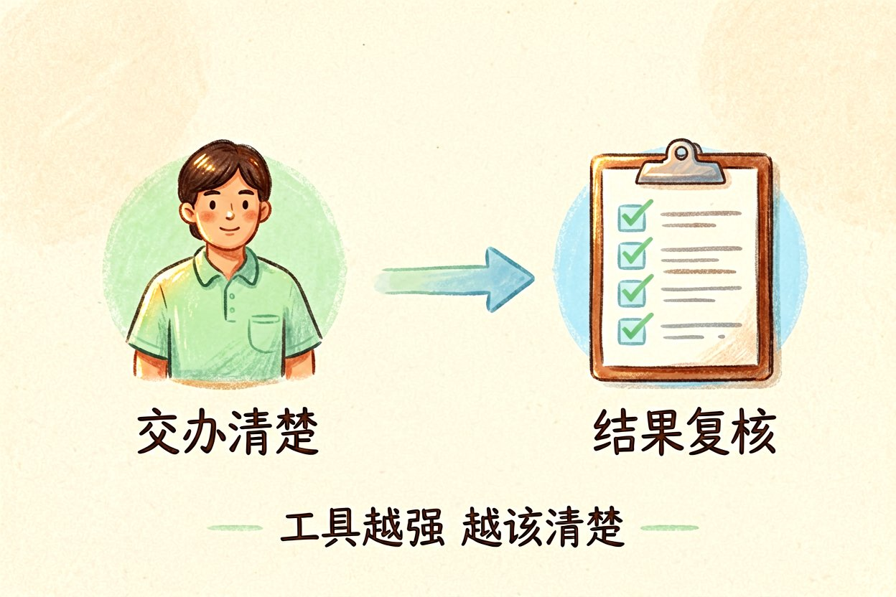

多模态 AI 是什么：能看能听还能读的模型
能同时看懂图、听懂话、读出字的 AI，和只会聊天的模型有什么不一样？这篇讲清楚。
多模态AI指的是同一个模型能同时吃进文字、图片、声音等多种信号，再给出连贯的回答。它不再是"只能聊"的机器人，而开始像人一样用多种感官理解世界。下面把它和纯文本模型掰开讲，顺带说清它现在能做什么、又常在哪翻车，帮你选工具时不交概念税。
多模态AI和普通模型差在哪
纯文本模型只认字，你给它一张图，它只能猜。多模态AI把图像、音频也编码成它能处理的表示，于是"这张图里有什么"能直接答。关键不是多一个功能，而是多种信息能在同一个模型里被关联。比如你拍一张菜，它能同时认菜、估热量、给做法，因为图和选项在同一个空间里对齐，跨模态的关联才是价值所在，纯文本模型做不到这点。
它现在能做什么
看图答题、按图写文案、听语音转写并总结、视频里定位某一帧，都已经可用。下面是一段典型调用，图文一起喂：
reply = model.ask(text="这张图里有什么", image="photo.jpg")
print(reply)一句话加一张图，就能拿到结构化结果。多模态AI把"先描述再处理"的麻烦省掉了。文档类的活儿它也擅长，拍一页纸就能抽取表格，比手敲快得多。视频里找某一帧也行，比如从长录像里定位"说到某产品"的那秒，剪片子省翻。
看明白不等于想明白
模型能描述图里内容，却不代表理解因果。比如它说"人在笑"，可能只是嘴角上扬，未必真开心。多模态AI在细节和常识上仍会翻车，重要结论要复核。医学、司法这类容错低的场景，别拿它的看图结论当证据。它给的是"看起来像"，不是"事实是"，这层距离要时刻记着，别被流畅的回答骗了。
选工具看输入类型
你主要处理图，就选视觉强的；主要处理语音，就选语音转写稳的。别被"全模态"宣传带偏，先列自己常用的输入，再对号入座。宣传里的"全"，往往每项都不深，专用模型反而更顺手。先用你最高频的那类输入去试，比看参数表靠谱。图文混合的活儿最划算：拍文档抽表格、拍商品写文案、拍图纸问做法。
一个清醒的预期

多模态AI是能力的加法，不是聪明的质变。把它当会看图的助手，多模态AI能省很多重复描述，但判断和担责仍归你。工具越强，你越该清楚它哪里会睁眼说瞎话。把它当实习生用：交办清楚、结果复核，配合才舒服。选错场景反而慢，纯文字聊天用普通模型更便宜也更快，别为了用而用。
本文信息核对于 2026-08-31。AI 产品的价格、免费额度与功能变动频繁，实际以各工具官网当前说明为准。